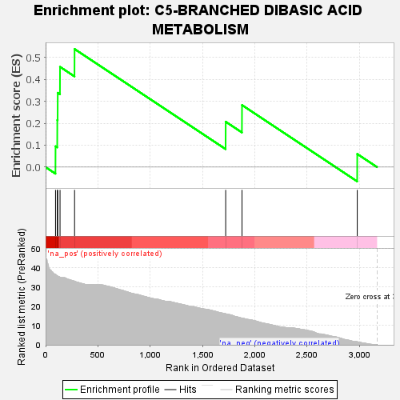
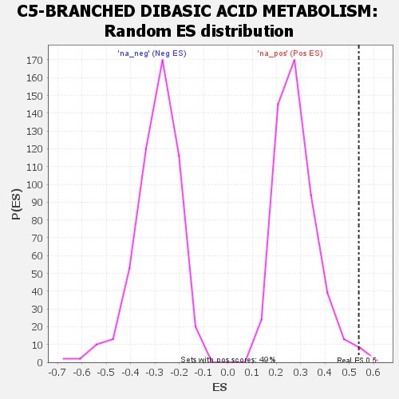

| | | Dataset | GSEA RNK clr Maaslin2 MucosalvsLuminal KO - SI.rnk |
| Phenotype | NoPhenotypeAvailable |
| Upregulated in class | na_pos |
| GeneSet | C5-BRANCHED DIBASIC ACID METABOLISM |
| Enrichment Score (ES) | 0.53866225 |
| Normalized Enrichment Score (NES) | 1.9170899 |
| Nominal p-value | 0.004048583 |
| FDR q-value | 0.026673263 |
| FWER p-Value | 0.336 |
Table: GSEA Results Summary

Fig 1: Enrichment plot: C5-BRANCHED DIBASIC ACID METABOLISM
Profile of the Running ES Score & Positions of GeneSet Members on the Rank Ordered List

Fig 2: C5-BRANCHED DIBASIC ACID METABOLISM: Random ES distribution
Gene set null distribution of ES for C5-BRANCHED DIBASIC ACID METABOLISM